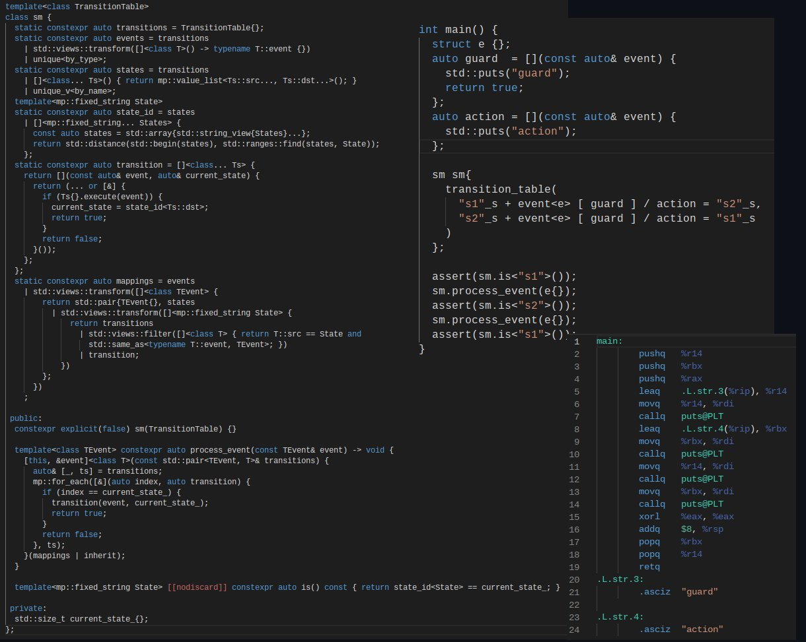

<!doctype html>
<html>
  <head>
    <meta charset="utf-8">
    <meta name="viewport" content="width=device-width, initial-scale=1.0, maximum-scale=1.0, user-scalable=no">

    <title>Powered by C++20: MP?</title>

    <link rel="stylesheet" href="reveal.js/css/reveal.css">
    <link rel="stylesheet" href="reveal.js/css/theme/league.css" id="theme">
    <link rel="stylesheet" href="extensions/plugin/line-numbers/line-numbers.css">
    <link rel="stylesheet" href="extensions/css/highlight-styles/zenburn.css">
    <link rel="stylesheet" href="extensions/css/custom.css">

    <style>
      .reveal h1, .reveal h2, .reveal h3, .reveal h4, .reveal h5 { text-transform: none; }
    </style>

    <script>
      var link = document.createElement( 'link' );
      link.rel = 'stylesheet';
      link.type = 'text/css';
      link.href = window.location.search.match( /print-pdf/gi ) ? 'reveal.js/css/print/pdf.css' : 'reveal.js/css/print/paper.css';
      document.getElementsByTagName( 'head' )[0].appendChild( link );

      function set_address(self, remote, local) {
        if (window.location.search.match("local")) {
          self.href = local;
        } else {
          self.href = remote;
        }
      }
    </script>

    <meta name="description" content="~~Template~~ Meta-Programming">
    <meta name="author" content="Kris Jusiak">
    <meta name="apple-mobile-web-app-capable" content="yes">
    <meta name="apple-mobile-web-app-status-bar-style" content="black-translucent">
  </head>

  <body>
    <div class="reveal">
      <div class="slides">
          <section data-markdown=""
                   data-separator="^====+$"
                   data-separator-vertical="^----+$">
          <script type="text/template">

#### C++Now 2023

---


## Powered by C++20
## Meta-Programming (MP)

---

###### [kris@jusiak.net](mailto:kris@jusiak.net) | [@krisjusiak](https://twitter.com/krisjusiak) | [linkedin.com/in/kris-jusiak](https://www.linkedin.com/in/kris-jusiak)

----

### Objective - implement declarative State Machine Langauge (SML) with zero-overhead!

----

#### State Machine


----

#### SML - Domain Specific Language (DSL)

```cpp
sm connection = [] {
  /**
   * src_state + event [ guard ] / action = dst_state
   */
  return transition_table{
   * "Disconnected"_s + event<connect> / establish  = "Connecting"_s,
     "Connecting"_s   + event<established>          = "Connected"_s,
     "Connected"_s    + event<ping> [ is_valid ] / reset,
     "Connected"_s    + event<timeout> / establish  = "Connecting"_s,
     "Connected"_s    + event<disconnect> / close   = "Disconnected"_s,
  };
};
```
<!-- .element: class="fragment" -->

----

#### SML - State Machine Language (on the slide)



----

#### SML - Performance


> Zero overhead abstraction
<!-- .element: class="fragment" -->

----

#### Implementation (https://github.com/boost-ext/mp)

----

#### C++20 - SML.back-end / sm (constexpr std::vector)

```cpp
template<auto transitions> class sm {
  // ...
```
<!-- .element: class="fragment" data-fragment-index="0" -->

```cpp
 public:
  constexpr explicit(true) sm(auto& transitions);
```
<!-- .element: class="fragment" data-fragment-index="1" -->

```cpp
  /**
   * Executes transitions... for state/event
   */
  constexpr auto process_event(const auto& event) -> void;
```
<!-- .element: class="fragment" data-fragment-index="2" -->

```cpp
 private:
  std::size_t current_state_{};
};
```
<!-- .element: class="fragment" data-fragment-index="0" -->

----

#### C++20 - SML.back-end / events (constexpr std::vector + std::ranges)

```cpp
  constexpr auto events = transitions
    | std::views::transform([]<class T> -> typename T::event {})
    | unique
    ;
```
<!-- .element: class="fragment" data-fragment-index="0" -->

---

```sh
Example: connect, established, ping, timeout, disconnect
```
<!-- .element: class="fragment" data-fragment-index="1" -->

----

#### C++20 - SML.back-end / states (constexpr std::vector + std::ranges)

```cpp
  constexpr auto states = transitions
    | []<class... Ts> { return list<Ts::src..., Ts::dst...>; }
    | std::views::filter([]<fixed_string State> {
        return not std::empty(State);
      })
    | unique
    ;
```

---

```sh
Example: Disconnected, Connecting, Connected, Disconnected
```
<!-- .element: class="fragment" data-fragment-index="1" -->

----

#### C++20 - SML.back-end / mappings (constexpr std::vector + std::ranges)

```cpp
static constexpr auto mappings = events
```
<!-- .element: class="fragment" data-fragment-index="0" -->

```cpp
  | std::views::transform([]<class TEvent> {
      return std::pair{TEvent{}, states
```
<!-- .element: class="fragment" data-fragment-index="1" -->

```cpp
         | std::views::transform([]<fixed_string State> {
            return transitions
              | std::views::filter([]<class T> {
                  return T::src == State and
                         typeid(typename T::event) == typeid(TEvent);
                })
```
<!-- .element: class="fragment" data-fragment-index="2" -->

              | []<auto... Transitions> {
                   [](const auto& event, auto& current_state) {
                     (... or Transitions(event, current_event));
                   }
                }
<!-- .element: class="fragment" data-fragment-index="3" -->

```cpp
          })
```
<!-- .element: class="fragment" data-fragment-index="2" -->

```cpp
      };
    })
```
<!-- .element: class="fragment" data-fragment-index="1" -->

```
  ;
```
<!-- .element: class="fragment" data-fragment-index="0" -->

----

#### C++20 - SML.back-end / mappings

```sh
Example:
  std::pair<ping, list<
      list<>,                       // state.Connecting
      list<transition<"Connected",
                      ping,
                      is_valid,
                      reset,
                      "">           // state.Connected
      list<>,                       // state.Disconnected
    >
  >, ...>;
```
<!-- .element: class="fragment" data-fragment-index="1" -->

----

#### C++20 - SML.back-end / process_event (IIFE)

```cpp
  constexpr auto process_event(const auto& event) -> void {
```
<!-- .element: class="fragment" data-fragment-index="0" -->

```cpp
  [this, &event]<class T>(const std::pair<TEvent, T>& transitions) {
    auto& [_, ts] = transitions;
```
<!-- .element: class="fragment" data-fragment-index="1" -->

```cpp
    // find transitions for current state
    auto index = 0u;
    for_each(ts, [&](const auto& transition) {
      if (index++ == current_state_) {
        transition(event, current_state_); // execute transition
      }
    });
```
<!-- .element: class="fragment" data-fragment-index="2" -->

```cpp
  // find transitions for corresponding event
  (mappings);
```
<!-- .element: class="fragment" data-fragment-index="1" -->

```cpp
  }
```
<!-- .element: class="fragment" data-fragment-index="0" -->

----

### Let's embrace C++20 Meta-Programming!

* ##### https://github.com/boost-ext/mp
* #####  https://godbolt.org/z/czj9bExrT

---

###### [kris@jusiak.net](mailto:kris@jusiak.net) | [@krisjusiak](https://twitter.com/krisjusiak) | [linkedin.com/in/kris-jusiak](https://www.linkedin.com/in/kris-jusiak)
          </script>
        </section>

      </div>
    </div>

    <script src="reveal.js/lib/js/head.min.js"></script>
    <script src="reveal.js/js/reveal.js"></script>

    <script>

      // Full list of configuration options available at:
      // https://github.com/hakimel/reveal.js#configuration
      Reveal.initialize({

        // Display controls in the bottom right corner
        controls: false,

        // Display a presentation progress bar
        progress: false,

        // Display the page number of the current slide
        slideNumber: 'c/t',

        // Push each slide change to the browser history
        history: true,

        // Enable keyboard shortcuts for navigation
        keyboard: true,

        // Enable the slide overview mode
        overview: false,

        // Vertical centering of slides
        center: true,

        // Enables touch navigation on devices with touch input
        touch: true,

        // Loop the presentation
        loop: false,

        // Change the presentation direction to be RTL
        rtl: false,

        // Turns fragments on and off globally
        fragments: true,

        // Flags if the presentation is running in an embedded mode,
        // i.e. contained within a limited portion of the screen
        embedded: false,

        // Flags if we should show a help overlay when the questionmark
        // key is pressed
        help: true,

        // Flags if speaker notes should be visible to all viewers
        showNotes: false,

        // Number of milliseconds between automatically proceeding to the
        // next slide, disabled when set to 0, this value can be overwritten
        // by using a data-autoslide attribute on your slides
        autoSlide: 0,

        // Stop auto-sliding after user input
        autoSlideStoppable: true,

        // Enable slide navigation via mouse wheel
        mouseWheel: false,

        // Hides the address bar on mobile devices
        hideAddressBar: true,

        // Opens links in an iframe preview overlay
        previewLinks: false,

        // Transition style
        transition: 'none', // none/fade/slide/convex/concave/zoom

        // Transition speed
        transitionSpeed: 'default', // default/fast/slow

        // Transition style for full page slide backgrounds
        backgroundTransition: 'default', // none/fade/slide/convex/concave/zoom

        // Number of slides away from the current that are visible
        viewDistance: 3,

        // Parallax background image
        parallaxBackgroundImage: '', // e.g. "'https://s3.amazonaws.com/hakim-static/reveal-js/reveal-parallax-1.jpg'"

        // Parallax background size
        parallaxBackgroundSize: '', // CSS syntax, e.g. "2100px 900px"

        // Number of pixels to move the parallax background per slide
        // - Calculated automatically unless specified
        // - Set to 0 to disable movement along an axis
        parallaxBackgroundHorizontal: null,
        parallaxBackgroundVertical: null,

        // Optional reveal.js plugins
        dependencies: [
          { src: 'reveal.js/lib/js/classList.js', condition: function() { return !document.body.classList; } },
          { src: 'reveal.js/plugin/markdown/marked.js', condition: function() { return !!document.querySelector( '[data-markdown]' ); } },
          { src: 'reveal.js/plugin/markdown/markdown.js', condition: function() { return !!document.querySelector( '[data-markdown]' ); } },
          { src: 'reveal.js/plugin/highlight/highlight.js', async: true, callback: function() { hljs.initHighlightingOnLoad(); } },
          { src: 'reveal.js/plugin/zoom-js/zoom.js', async: true },
          { src: 'reveal.js/plugin/notes/notes.js', async: true },
          { src: 'extensions/plugin/line-numbers/line-numbers.js' }
        ]
      });

      <!--window.addEventListener("mousedown", handleClick, false);-->
      <!--window.addEventListener("contextmenu", function(e) { e.preventDefault(); }, false);-->

      function handleClick(e) {
        if (1 >= outerHeight - innerHeight) {
          document.querySelector( '.reveal' ).style.cursor = 'none';
        } else {
          document.querySelector( '.reveal' ).style.cursor = '';
        }

        e.preventDefault();
        if(e.button === 0) Reveal.next();
        if(e.button === 2) Reveal.prev();
      }
    </script>

  </body>
</html>

